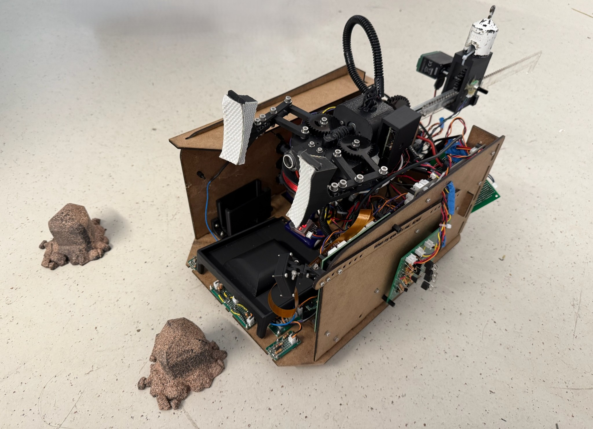
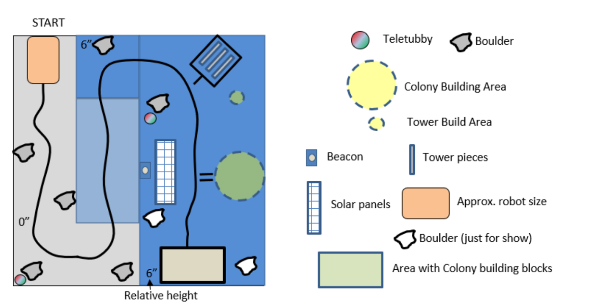
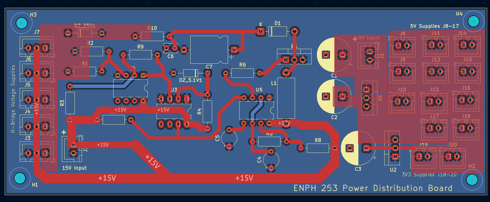
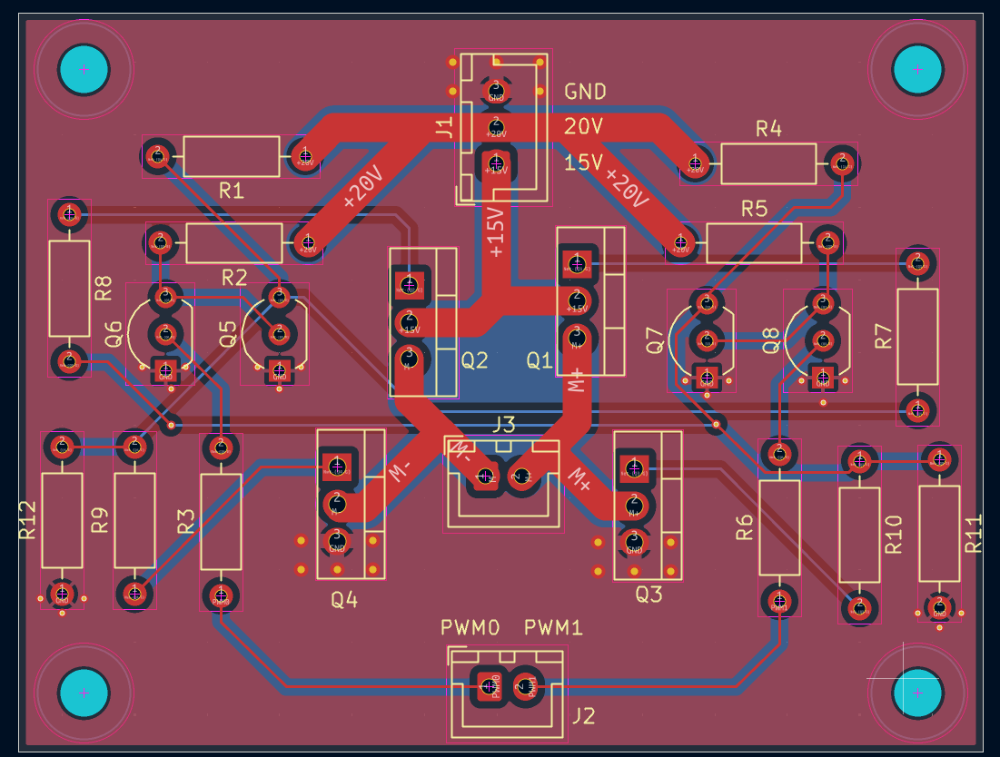
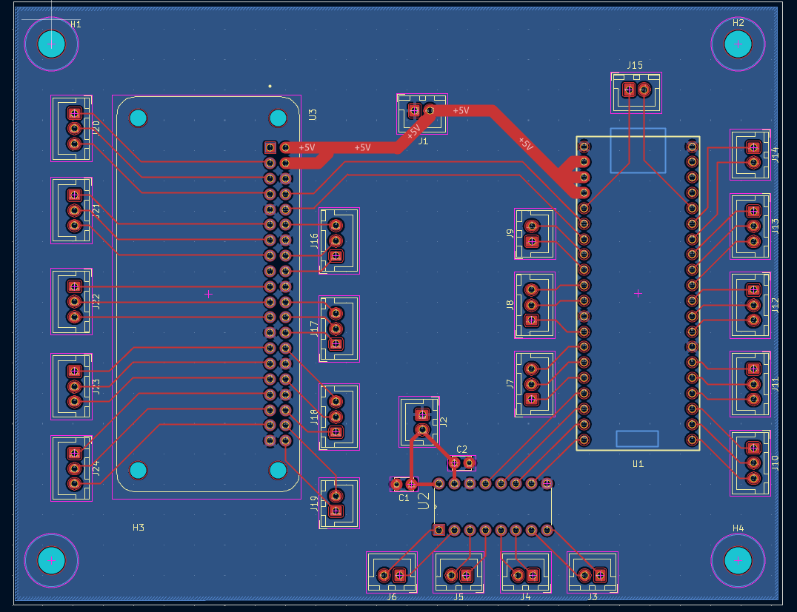
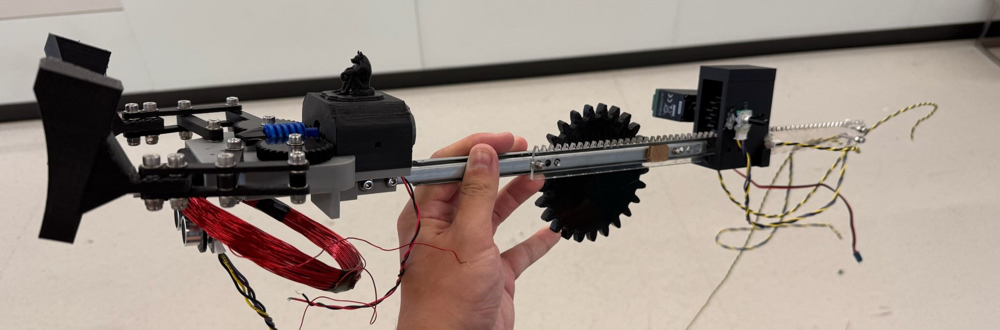
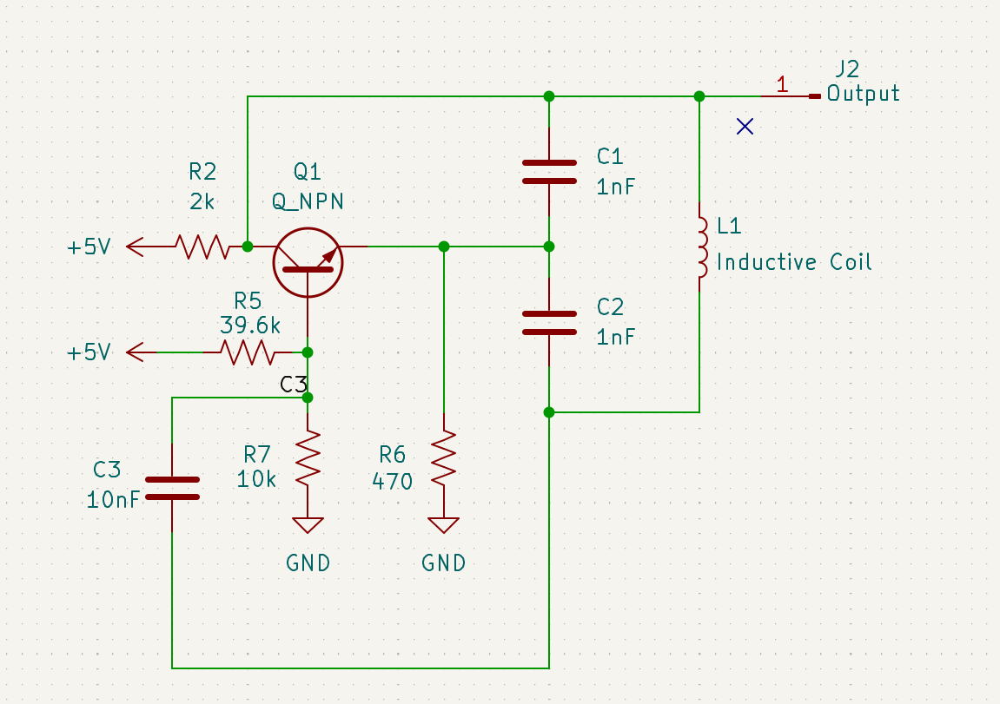
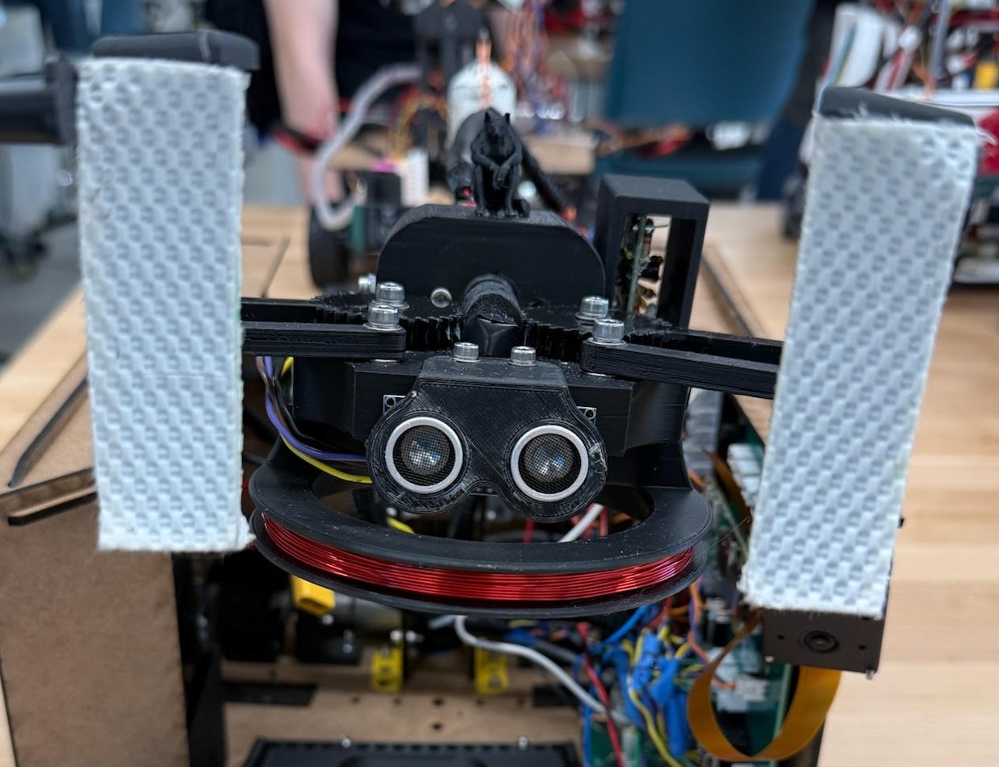
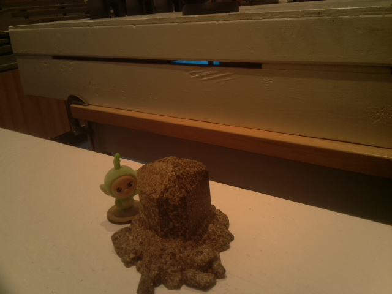
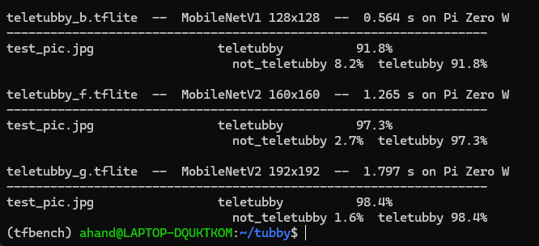

Mars Habitat Robot
Fully autonomous robot made completely from scratch!
RoboticsSolidWorksKiCadESP32C++Computer VisionSensors

This was a robot I built with 3 teammates for the annual Engineering Physics robotics competition at UBC. This year, the competition was Mars themed. Every robot had to autonomously navigate the course, and points were scored across five independent tasks; assembling habitat pieces, assembling a radio tower, uncovering a solar panel, spotting hidden Teletubbies, and recovering a metal rock. Given the team size and timeline, we chose to build a robot that could:
- 01Autonomously navigate the course
- 02Correctly identify and pick up the metal rock from the various rocks placed on the course
- 03Detect Teletubbies hiding behind rocks
- 04Take off velcro covering from a solar panel

The robot's behavior was split across five major subsystems:
Subsystem 01
Navigation
The course was marked with a black tape path, so we used a PID-controlled line-following loop reading reflectance sensors to track it.
Subsystem 02
Electronics
Split the electronics across three boards by function, each laid out and fabricated individually: the power distribution board regulates and routes every voltage rail on the robot, an H-bridge board to power the DC drive motors, and an ESP32 + Raspberry Pi carrier board ties the control loop and vision system together.
The power board takes two separate LiPo inputs: a 15V pack that a bang-bang-controlled boost converter steps up to 20V for the H-bridges, and a 9V pack stepped down to 5V and 3.3V for everything else on the robot, such as the the sonar, encoders, ESP, etc. The ESP carrier board exposes the ESP's pins through headers and routes its UART lines to the Raspberry Pi. Grounds across all three boards tie back to the power board to stay common. One problem we ran into was that we were using all of the ESP's available pins; we solved it by adding an external 8-channel ADC and reading it over SPI, turning 8 sensor inputs into just 4 ESP pins.



Subsystem 03
The Claw

We needed a claw that could pick up the metal rock and uncover the solar panel by pulling a hook to remove its velcro covering. Neither task required reaching sideways, so rather than add a horizontal degree of freedom to the claw itself, we simply rotated the whole robot to face the target, which is why the claw only needed to pitch and extend. A rack-and-pinion mechanism guided by a linear bearing provides the linear extension, while a worm gear and spur gear system controls the claw's pitch.
For the gripper, we wanted a light DC motor rather than something heavy that would destabilize the robot once the arm extended outward, so we built a four-bar linkage driven by a central worm gear turning two synchronized spur gears for a 32:1 reduction. This provided enough torque to grip firmly from a small, light motor, opening and closing both sides of the claw together.
Subsystem 04
Metal Detection
We built and tuned an LC oscillator metal-detection circuit, including winding and integrating the sensing coil, which serves as the oscillator's inductor.
The LC oscillator contiously oscillates at a set frequency. This alternating current through the coil generates a magnetic field; nearby metal induces eddy currents that alter the coil's effective inductance, shifting the oscillator frequency and allowing metallic objects to be detected. We tested different coil diameters and turn counts to find the combination that gave the largest frequency shift on metal detection.


Subsystem 05
Teletubby Detection
Trained a binary image classifier to detect whether a teletubby was present in frame. We benchmarked a few model sizes for inference speed on the Raspberry Pi Zero W and picked the one that struck the best balance between speed and accuracy for our needs.


Fig. 13 — High-level system architecture: sensing, control, and actuation, with encoder/limit-switch feedback closing the loop.